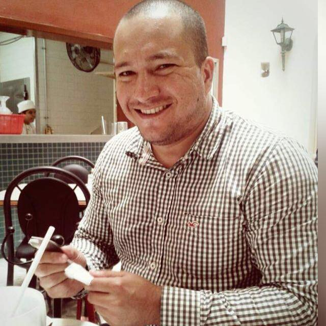

Traditional and Agile Project Management Certified, Data Scientist and Machine Learning Engineer
• Experienced project manager offering 8 years of success leading all phases of diverse technology projects; PMP, PMI-ACP, ITIL Foundations and ITIL Operational Support and Analisis credentials; degrees in Cybernetics and Systems engineer; and 12 years of computer programming and business analysis experience.
• Excellent communicator; leverage technical, business and financial acumen to communicate effectively with client executives and their respective teams.
• Expert in agile project management methodologies. Able to manage large project teams and known for high-quality deliverables that meet timeline and budgetary targets, using agile project management methologies such as SAFe and SCRUM.
• Expert in lifecycle service operation. Knowledge about implementation and IT operational continuity, using ITIL as a framework or methodology once this is implemented in the company.
• Custom Software Developments: Managed all phases of the software development lifecycle (SDLC) for dozens of custom solutions.
• Database Developments: Guided teams in development of relational database management systems (RDBMS) for clients such as PEMEX and COTEMAR.
Results: Improved the consistency, recoverability and accessibility of data.
• System Integrations/Migrations: Project-managed large-scale initiatives involving the transition of legacy systems to new platforms such as TIBCO Business Works, SAP, Java, .NET, versions upgrades from windows Server 2000 to Window Server 2012, SQL Server 2000 to SQL Server 2008 R2.
• Enterprise Implementations: Directed SAP Upgrades of new versions for clients including NUTEC, FAPSA, C&A.
Mobile: +1 650 492 3512
e-mail: raulfco10@gmail.com
Education
- Master in Applied Computation
- 2019-2021. University of Guadalajara (In progress)
- Cibernetics and Systems Engineer
- 2002-2006. La Salle University

Professional Experience
- PSG Sr Consultant
- Oct 2018-Current. TIBCO Software
- Sr. Project Manager
- Apr 2018-Sep 2018. DXC
- Sr. Project Manager
- Sep 2016-Apr 2018. KPMG - Assigned to HPE
- PSG Consultant
- Oct 2014-Sep 2016. TIBCO Software
- SAP - Development Lead
- Oct 2012-Sep 2014. IBM
Certifications and Trainings
- Project Manager Professional (PMP)
- July 2014-July 2020. Project Management Institute
- PMI Agile Certified Practitioner (PMI-ACP)
- Aug 2016-Aug 2022. Project Management Institute
- Scrum Master Certified
- Aug 2017-Aug 2020. SRUMStudy
- From 0 to Data Science
- May 2019-Aug 2019. IJALTI
Awards
- 2nd PLACE SOCIAL DATA CHALLENGE 2.0 BY DATALAB
- 2019